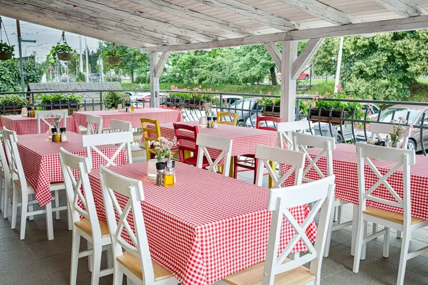

01 / 03
Restaurace
Fotím restaurace, hospody a jejich terasy tak, aby z fotek byla cítit atmosféra podniku. Sám podnikám v gastronomii, a tak vím, jak moc na fotkách záleží.
Zeptat se na termín→



Fotografie, které prodávají váš prostor
Zeptat se na termín →(01) Ahoj
Jmenuji se Lukáš Krakovič a fotím restaurace , ubytování a další komerční prostory . Díky podnikání v gastronomii vím, jak důležitá fotografie je. Spojuji technickou přesnost s citem pro atmosféru.
(02) Co fotím
01 / 03
Fotím restaurace, hospody a jejich terasy tak, aby z fotek byla cítit atmosféra podniku. Sám podnikám v gastronomii, a tak vím, jak moc na fotkách záleží.
Zeptat se na termín→02 / 03
Fotím pokoje, apartmány i společné prostory penzionů a chalup. Snímky se hodí na web i na rezervační portály, kde hosté vybírají podle fotek.
Zeptat se na termín→03 / 03
Fotím domy, pozemky, kanceláře a další komerční prostory. Nechci jen hezké obrázky, chci funkční fotky, které pomáhají prodávat.
Zeptat se na termín→(03) Portfolio
Kliknutím fotku zvětšíte · fotografie jsou ilustrační
(04) Postup
Od první zprávy po hotovou galerii.
Krok 1 z 4
Zavolejte, napište e-mail nebo zprávu na WhatsApp. Odpovím do 24 hodin.
Krok 2 z 4
Probereme, jaký prostor chcete nafotit, k čemu fotky budete používat a kdy se to hodí.
Krok 3 z 4
Přijedu za vámi kamkoli v Česku a u každého záběru hledám správný úhel a světlo.
Krok 4 z 4
Fotky pečlivě upravím, aby byly technicky čisté a přitom působily přirozeně, a pošlu vám je.
Správný úhel a správné světlo.
(05) Za objektivem
Jsem Lukáš Krakovič a fotím restaurace, ubytovací služby, reality a jiné komerční prostory. Sám podnikám v gastronomii, takže vím, že host si podnik často vybírá podle fotek dřív, než poprvé vejde dovnitř.
Mým cílem nejsou jen hezké obrázky, ale funkční fotografie, které prodávají a reprezentují. Vždycky hledám ten správný úhel a světlo. Výsledek musí být technicky perfektní, aby působil přirozeně a živě.
Sídlím v Kuřimi u Brna, ale za zakázkami jezdím po celé České republice. Stačí zavolat nebo napsat na WhatsApp, odpovím do 24 hodin.
Lukáš
Lukáš Krakovič · Fotograf interiérů a komerčních prostor
Restaurace, ubytování, reality a jiné komerční prostory, tedy interiéry, terasy i exteriéry budov.
Ano. Sídlím v Kuřimi u Brna, ale za zakázkami cestuji po celé České republice.
Na zprávy a e-maily odpovídám do 24 hodin. Klidně mi i zavolejte nebo napište na WhatsApp.
Je dobré mít uklizeno a prostřeno tak, jak to mají vidět hosté. Podrobnosti spolu projdeme předem, abychom na místě nic nehledali.
(07) Kontakt
Napište pár vět o tom, co si představujete, a termín, který se vám hodí.